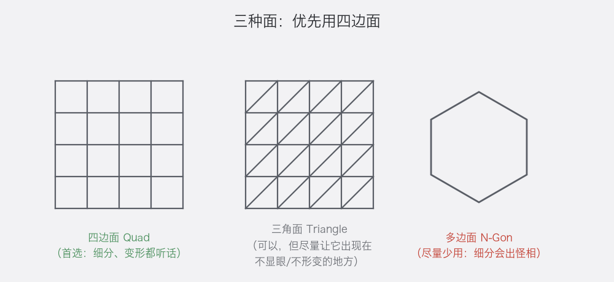
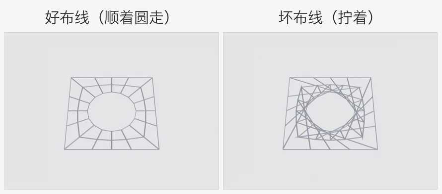
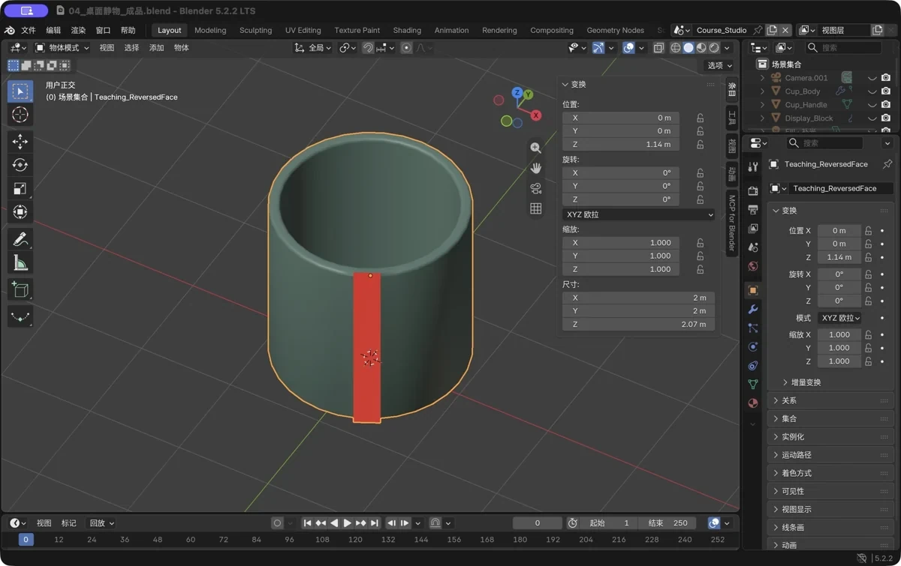
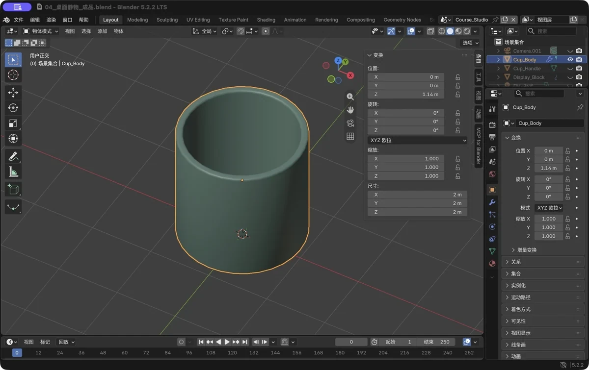

第 5 章 拓扑与结构思维：让模型“经得起折腾”
场景：大神的模型怎么拉都圆润好看，你的模型一拉就皱、一细分就炸毛。问题不在手速，在于面是怎么排布的。这一章不背术语，只搞懂三件事。
学完你会
这一章是"内功心法"。你会先认识三种面，明白为什么"四边形优先"；然后学会一眼分辨"好布线"和"坏布线"；再把一句口诀刻进脑子——先大形、后细节。理论之外，还有四个动手小实验：合并顶点、比例编辑、面朝向检查、非流形快查——这几个动作，以后会变成你每次收工前的"例行体检"。
核心概念 1：三种面

图 41 四边形是“好公民”，三角形是“临时工”，多边形是“定时炸弹”
模型表面由一个个面拼成，而面分三种：
| 面类型 | 长相 | 怎么对待它 |
|---|---|---|
| 四边形 Quad | 四条边围成 | 默认首选，越多越好 |
| 三角形 Tri | 三条边 | 可以有，但尽量让它待在“不会被拉扯”的角落 |
| 多边形 N-Gon | 五条边以上 | 尽量别造，细分时容易出怪褶子 |
为什么四边形好？把它想象成网兜：四边形的网兜拉伸时，格子均匀变形；五边形、三角形的网兜一拉就扭曲走样。这是 3D 行业几十年的经验结论，你不需要推导，记住"能用四边形就用四边形"就够了。
核心概念 2：布线跟着形状走
给一块板开个圆孔，两种做法的差距一目了然：

图 42 左：线一圈圈顺着圆走（好）。右：线跟孔“拧着”（拉伸必炸）
再看两个真实例子：
图 43 左：立方体细分后全是均匀四边形（教科书级干净）。右：UV 球的极点处是三角扇——这是球体的“天生结构”，不必恐慌，把镜头躲开它就行
一句话总结：线条要顺着结构的走向排——圆孔周围用环状线，转角处让四边形自然过渡。平时看不出差别，一形变就分高下。
核心概念 3：先大形，后细节（全章最重要）
这是新手和老手最大的分水岭，请刻进脑子：
先用最少的点面，把“大形”定准（比例、体块、轮廓）；大形确认无误后，再往上加细节。
反面教材都长一个样：抱着一个立方体抠了两小时"小零件上的八个螺丝"，退后一看——整个比例全歪，只能全删重来。正确的节奏分三段：
| 阶段 | 干什么 | 判断标准 |
|---|---|---|
| ① 体块阶段 | 大方块、大圆柱摆整体比例，反复挪 | 从各个角度看着“像那么回事” |
| ② 结构阶段 | 用挤出、环切做出主要形体 | 零件都有了，但表面还“糙” |
| ③ 细节阶段 | 加螺丝、刻线、装饰 | 最后 10% 的工作量 |
口诀是先粗后细，先整体后局部。细节永远最后做——因为细节做错了删掉不心疼，比例做错了全部重来。
跟着做：两个"网格体检"小实验
模型做多了会积累两样"垃圾"：重叠的顶点和朝向乱掉的面。它们是各种诡异问题的源头，体检手法很简单：
实验 A：合并重叠顶点
新建一个平面，Shift+D 原地复制一份，G Z 0.02 只挪开一点点；选中它，Tab 进编辑模式，A 全选，按 M → 选按距离（By Distance）——两层几乎重合的顶点被合并，垃圾清除了。
但要用对场合：布尔、大量复制之后，如果发现有重叠的点，再做一次"按距离合并"（阈值先小后大）。别养成"无脑全选合并"的习惯——有些靠得很近的顶点是你故意保留的，会被一起合掉；合并之前，先想清楚这片区域该不该合。
实验 B：比例编辑——“橡皮泥模式”
新建立方体，Tab 进编辑模式，按 1 切顶点模式；按 O 开启比例编辑（Proportional Editing）；选中一个顶点按 G 移动——周围的顶点会被柔性拖着走，像捏橡皮泥。滚轮可以调"影响范围"：把范围调大，拉一个顶点，一个圆顶小屋的大形两秒就出来了。
这招是"体块阶段"的第一神器，第 10 章的实战项目里会反复用到。
实验 C：面朝向——一眼看出谁反了
视口右上角点开"叠加层（Overlays）"下拉，勾选面朝向（Face Orientation）；立刻看图：朝外的面显示蓝色、朝里的面显示红色（不同主题颜色略有差异）。正常的封闭模型从外面看应该"一片蓝"；看到红色，就是那儿的面反了——编辑模式 A 全选 → Shift+N 重新计算外侧即可修复。检查完记得把"面朝向"关掉，免得一直看"蓝乎乎"。

图 44 真实软件截图：这条红色竖条就是被翻转的面——“面朝向”一开，问题藏不住

图 45 Shift+N 之后红色消失。以后遇到“黑面 / 现象怪”，固定套路：开面朝向 → 见红就重算
实验 D：非流形快查（封闭物体体检）
编辑模式 → 选择菜单 → 按特征全选 → 非流形。封闭的实体（比如做好的杯子）应该什么都选不中；如果选出了一圈开放边，说明那里有洞或缺面——用 F 补面，或者回上一步检查是不是误删了面。
💡 平滑着色 ≠ 轮廓变圆。平滑只改表面的明暗过渡（看起来顺），不改形状；要让六边形圆柱的轮廓真的圆起来，得加分段或上细分曲面。这是两件事，分开记。
新手常见坑
| 坑 | 症状 | 对策 |
|---|---|---|
| 渲染出现黑面 | 面的朝向（法线）乱 | 编辑模式 A 全选 → Shift+N（重算法线） |
| 开了平滑着色还是不够圆 | 平滑只改明暗，不改形状 | 想轮廓变圆：加分段或挂细分曲面 |
| 细分后长尖刺 | 有重叠顶点或多边形 | M 按距离合并；大多边形用 K 切刀切成四边形 |
| 删东西留下“鬼影”碎片 | 隐藏的重叠几何 | 大纲视图检查，删干净重来 |
| 拉一个点，全身乱动 | 比例编辑开/关的状态不对 | 看视口顶部的小圆点图标，或按 O 切换 |
| 上来就抠细节 | 大形没定 | 逼自己“整体对形”三遍之后，再动细节工具 |
过关标准
- 我能说出为什么“四边面优先”，以及什么时候三角形、多边面其实没关系；
- 我会用面朝向检查法找出翻转的面，并
Shift+N修复； - 我用过“非流形”快查；我也试过比例编辑捏大形。
自检题
- 三种面里为什么首选四边形？用“网兜”的比喻讲一遍。
- “先大形后细节”分哪三个阶段？
- 模型渲染出黑面，第一个要试的操作是什么？
- 比例编辑的快捷键是什么？它解决什么问题？
答案见文末。
自检题答案
- 四边形拉伸变形时格子均匀（像匀称的网兜），三角形/多边形容易扭曲起皱。
- ① 体块阶段（定比例）→ ② 结构阶段（做主要形体）→ ③ 细节阶段（加装饰）。
- 编辑模式
A全选 →Shift+N重算法线。 O。让移动顶点时周围产生“柔性过渡”，适合快速调整大形。
小结
这一章的三件事值得反复咀嚼：优先四边形；布线顺着形状走；先大形后细节。前两件是手感，第三件是心态——它决定了你是越做越顺，还是越做越推倒重来。
体检的本事也收好：M 按距离合并清重叠、Shift+N 重算法线治黑面，配合"面朝向"的蓝红检查，基本能诊断大多数"看着不对"的病。想快速捏大形，别忘了比例编辑 O 这块橡皮泥。这一章的目的不是让你成为拓扑专家，而是建立审美和顺序感——后面的每一章实战，都会不断验证它。